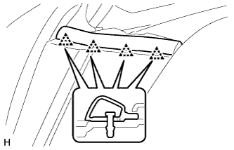
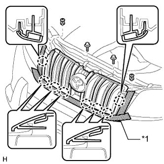

РЕШЕТКА РАДИАТОРА > СНЯТИЕ |
| 1. СНИМИТЕ ВЕРХНЕЕ УПЛОТНЕНИЕ КРОНШТЕЙНА РАДИАТОРА |
Освободите 13 фиксаторов и снимите верхнее уплотнение кронштейна радиатора.
| 2. СНИМИТЕ ЛЕВОЕ БОКОВОЕ УПЛОТНЕНИЕ ПЕРЕДНЕГО БАМПЕРА |
|  |
Освободите 4 фиксатора и снимите боковое уплотнение переднего бампера.
| 3. СНИМИТЕ ПРАВОЕ БОКОВОЕ УПЛОТНЕНИЕ ПЕРЕДНЕГО БАМПЕРА |
| 4. СНИМИТЕ РЕШЕТКУ РАДИАТОРА |
|  |
Наклейте защитную клейкую ленту вокруг решетки радиатора.
Освободите 2 фиксатора и выверните 2 болта.
Расцепите 8 захватов и снимите решетку радиатора.
| *1 | Защитная клейкая лента |